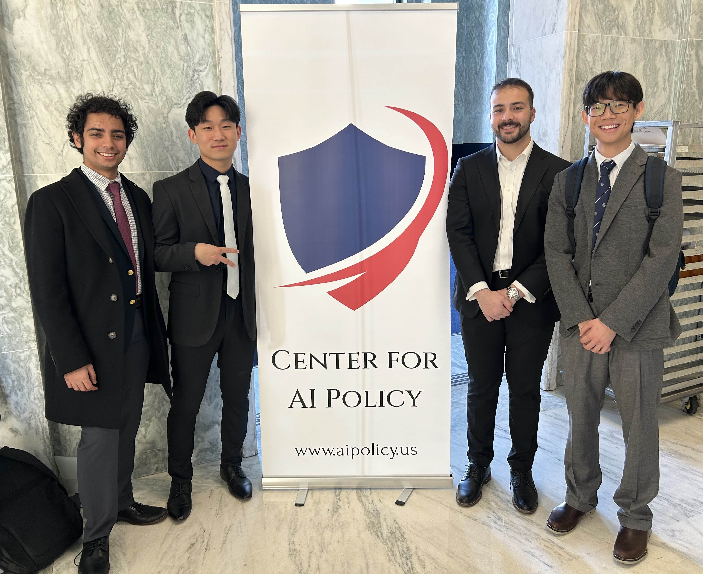

2026
An interactive dashboard for AI policy and strategy researchers to explore the positions of stakeholders in foreign regulatory bodies.
一个面向 AI 政策与战略研究者的交互式仪表盘，用于探索各国监管机构中利益相关方的立场。
A cross-sector Delphi panel of researchers, auditors, industry, standards bodies, and government identified 27 shared practices for high-quality AI evaluations. We recommend evaluation practitioners consider and adopt at least these 27 practices where relevant for constructing, documenting, maintaining, using, and reporting the results of AI evaluations.
一个由研究者、审计方、产业界、标准机构和政府组成的跨领域德尔菲专家组，确定了 27 条高质量 AI 评估的共识实践。我们建议评估从业者在构建、记录、维护、使用和报告 AI 评估结果时，至少考虑并采纳这 27 条相关实践。
Contributed to the EvalEval Coalition's response to NIST's RFI on best practices for automated benchmark evaluations (Gaps 6, 7, 8 and editorial decisions). As of April 2026, our response was acknowledged by NIST CAISI staff Drew Keller.
参与撰写 EvalEval 联盟对 NIST 关于自动化基准评估最佳实践信息征询（RFI）的回应（负责 Gap 6、7、8 及编辑决策）。截至 2026 年 4 月，我们的回应已获 NIST CAISI 工作人员 Drew Keller 的认可。
2025
Lead a Georgia Tech team to demonstrate jailbreak risks to congressional staffers on Capitol Hill. We made a red teaming game for staffers to play.
带领佐治亚理工团队在国会山向国会工作人员演示越狱风险。我们为工作人员制作了一个红队游戏。

Parv and I authored a response to the USG's 2025 AI R&D Request For Information. Our recommendations on control, evaluation, and interpretability research were echoed in America's AI Action Plan
Parv 和我撰写了对美国政府 2025 年 AI 研发信息征询（RFI）的回应。我们在控制、评估和可解释性研究方面的建议在《美国 AI 行动计划》中得到了呼应。
I led the ethics and responsible use sub-committee to work out the terms of use, levels of access, and made some demos for students. The makerspace is an educational GPU cluster with ~300 H100/200s.
我领导伦理与负责任使用小组委员会，制定使用条款和访问权限层级，并为学生制作了一些演示。该 Makerspace 是一个拥有约 300 张 H100/H200 的教学用 GPU 集群。
For a semester, I was the director of events for this community of entrepreneurs and builders at Georgia Tech. We regularly hosted large scale events such as hackathons, pitch competitions, and fireside chats.
我曾担任这个佐治亚理工创业者与创造者社区的活动总监一个学期。我们定期举办黑客马拉松、路演比赛和炉边谈话等大型活动。
*-2024
A robot dog inspired by Boston Dynamics' Spot with 3DoF per limb and controlled by an ESP32. I had a great time learning basic CAD, electronics, and inverse kinematics.
一只受波士顿动力 Spot 启发的机器狗，每条腿 3 个自由度，由 ESP32 控制。学习基础 CAD、电子和逆运动学的过程非常有趣。
IB Physics EE. An original, simplistic model based on high school physics that predicts reality surprisingly well.
IB 物理拓展论文。一个基于高中物理的原创简化模型，对现实的预测出奇地准确。
Built New Zealand's largest peer support and tutoring community for the IB Diploma during my gap year out of high school. Supported hundreds of students and paired 30+ students with tutors.
在高中毕业后的间隔年里，创建了新西兰最大的 IB 文凭同伴支持与辅导社区。帮助了数百名学生，并为 30 多名学生匹配了辅导老师。